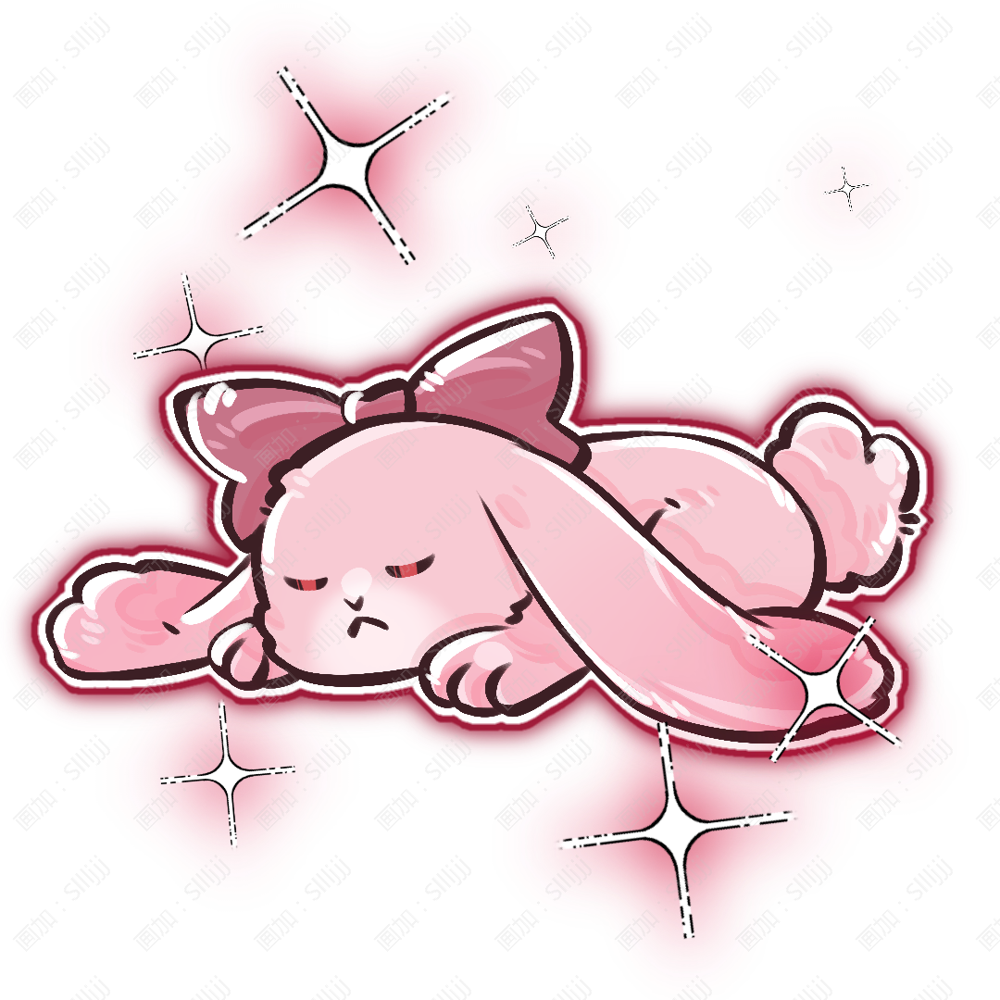

Xishu
夕舒

姓名：夕舒·奧斐爾。
英文：Xishu Orphiel。
種族：精靈 × 人類混血。
性別：無性別。
生日：5月15日。
年齡：24歲。
居住：艾爾德利亞白蘭城。
身高：179cm。
體重：51kg。
夕舒的外貌十分精緻，兼具柔和的男性魅力與女性美感。五官細緻，神情帶着一點狐狸般的靈動感。
他有一頭偏深的暖褐色長髮，髮質柔軟，髮尾帶着自然的捲度。耳側混入明顯的焦橘色挑染，越靠近髮尾橘色越多，在陽光下會呈現出溫暖的金橘色。
他的雙眼並不相同。右眼是清澈的綠色，左眼則是明亮的紅色，瞳孔中帶有三角形紋樣。右眼下方還有三個大小不同的小三角形。
這些特殊的外貌變化與過去和小白締結靈契有關。
夕舒平時會佩戴一對精緻的兔耳髮飾。兔耳呈柔軟的暖褐色，內側偏橘紅，與他的髮色相互呼應。這並不是他的種族特徵，他本人也沒有兔系血統。
原本的外貌：
在靈契破碎以前，夕舒原本有一頭橘黃色的頭髮，雙眼都是綠色，兔耳髮飾與服裝也以橘黃色為主。
小白離世、靈契破碎後，他的外貌發生了變化，成為現在的暖褐色長髮與異色瞳。
在戰鬥時，受到體內異常的精靈血脈力量影響，他有時會短暫恢復原本的外貌。這並不是他能夠自由選擇的變身，而是一種尚未完全明確的異常現象。戰鬥結束後，他便會恢復現在的模樣。
夕舒是一個溫柔、細膩且有禮貌的人。
他很擅長察覺別人的情緒變化，也懂得照顧他人的感受。即使面對不熟悉的人，他通常也會保持友善的態度，不會刻意冷落或拒絕別人的善意。
然而，他並不像表面上看起來那樣容易親近。
別人主動靠近時，他會溫柔地回應，也能自然地與人相處，但總會在不知不覺間保留一段距離。他不太習慣向別人透露自己的脆弱，也很少主動讓自己依賴某個人。
他並不是不喜歡與人相處，也沒有失去對生活的興趣。只是比起過去，他現在更加謹慎地對待親密關係。
夕舒內心有着很強的不安全感，也容易對自己產生過多的責任感。他害怕失去重要的事物，難以接受無法預測的結果，因此有時會過度思考，希望將一切安排在自己能夠掌握的範圍內。
他曾經因為過度追求安全、希望保護小白，而做出了一個最終造成不可挽回結果的選擇。那並不是他明知道會傷害小白仍然做出的決定，而是當時的他真的認為那樣才是更安全的選擇。
即使如此，他並沒有因此失去對生活的喜愛。
他依然喜歡花朵、美麗的事物，也依然認真經營自己的花藝鋪。只是在人際關係中，他不再輕易讓任何人走進自己的內心。
白蘭城高級私人花藝鋪經營者、花藝師。
夕舒經營着一間非常精緻的高級花藝鋪，店內的花卉、裝飾與空間設計都經過細心安排。
花藝鋪接受各種花藝委託，包括私人花束、慶典、宴會、婚禮以及其他特殊場合的花藝設計。
他對花朵的種類、色彩搭配與整體裝飾有着很高的要求，也因此逐漸建立起自己的名聲。
喜好？我也不知道我喜歡什麼哎。一定要說一個的話……那應該是花朵、植物、漂亮的裝飾、精緻的物品吧？
以前的理想是開一家屬於自己的漂亮花店。
現在，這個願望已經實現了。
至於未來還想做什麼，他暫時沒有明確的答案。比起為自己設定一個很遠大的目標，他更願意認真過好現在的生活。
花藝設計、配色、裝飾、植物照護、宴會佈置。
擅長察覺別人情緒上的細微變化，也有不錯的觀察力與審美能力。
力量：★★★☆☆
體力：★★★★☆
智慧：★★★★☆
魅力：★★★★★
幸運：★★☆☆☆
武器：花傘。
屬性：花、跡。
技能：
「花旋」
夕舒轉動花傘，使花屬性沿着傘緣擴散，大量由屬性形成的花瓣隨着氣流旋轉。花瓣可以擾亂視線，也能夠改變周圍氣流。
「輕風」
利用風屬性減輕移動阻力，使自己能夠在短距離內快速改變方向。這種移動習慣最初受到與小白締結靈契時的影響。即使靈契已經破碎，他的身體仍然保留着曾經一起奔跑的習慣。
「花幕」
夕舒撐開花傘，在前方形成由花與風交織而成的弧形屏障。攻擊接觸屏障時，會受到不斷流動的氣流影響。
大招「春日花庭」
夕舒將花傘向上拋起，大量花屬性隨着氣流擴散，周圍短暫形成一片被花瓣覆蓋的區域。花瓣會隨着夕舒的動作改變流向，使整個區域呈現出如同春日花海般的景象。
精靈專屬天賦：森語。
「森語」
精靈血脈所擁有的特殊天賦，與植物及自然有關。具體能力尚未完全設定。
小白。
種類：白兔靈獸。
屬性：無明顯戰鬥屬性。
狀態：已死亡。
小白是一隻白色的兔子靈獸，體型不大，擁有淡紅色的眼睛。
它是夕舒童年時期最重要的陪伴者。
對夕舒來說，小白不只是靈契夥伴。它是家人、朋友，也是陪伴他度過無數日常的存在。它們一起度過了許多普通而平凡的日子，無論是開心的時候，還是什麼也沒發生的時候，小白都一直在他身邊。
小白是夕舒唯一且無可替代的存在。
在與小白締結靈契後，夕舒的外貌也逐漸出現相應的變化。即使後來靈契破碎，這些痕跡仍然留在他的身上。
小白離世後，夕舒沒有再養過兔子，但依然保留着對兔子相關事物的喜愛，也一直佩戴着兔耳髮飾。
他並不認為自己需要忘記小白。對他而言，繼續生活與繼續記得小白，從來都不是互相衝突的事情。